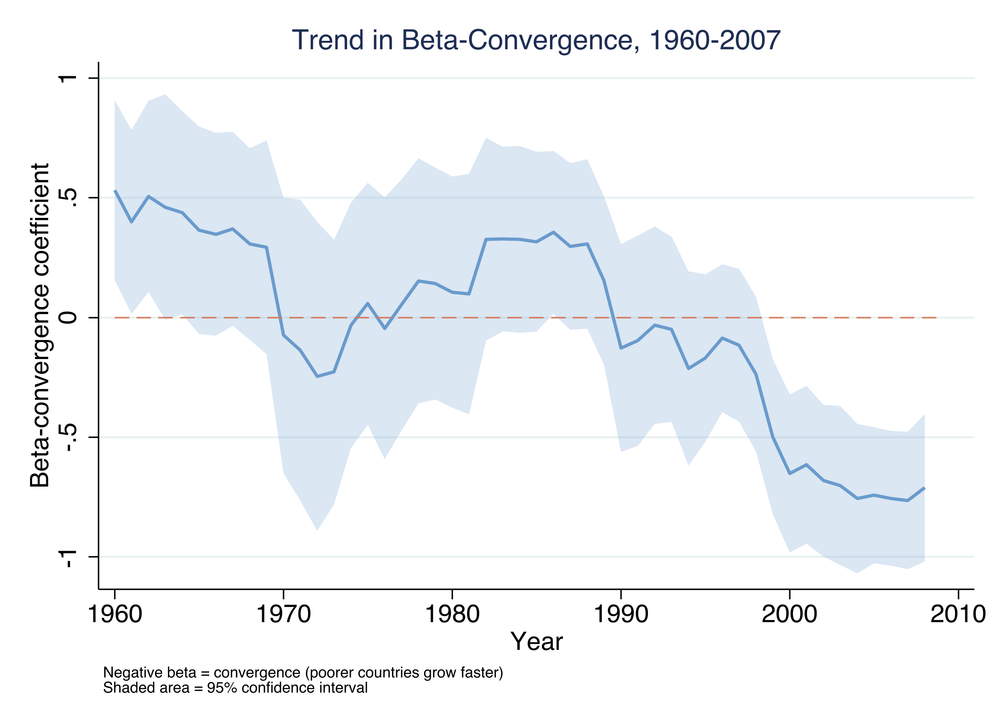
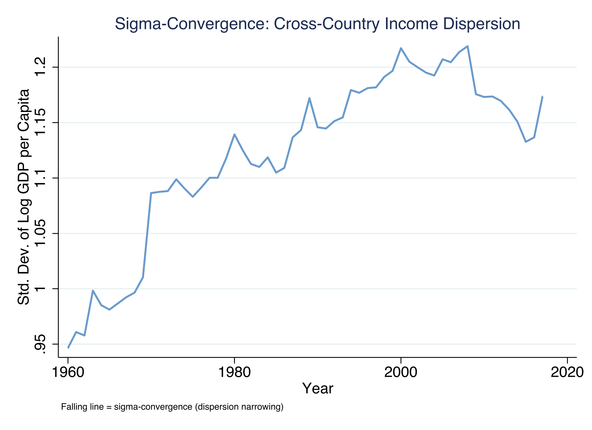
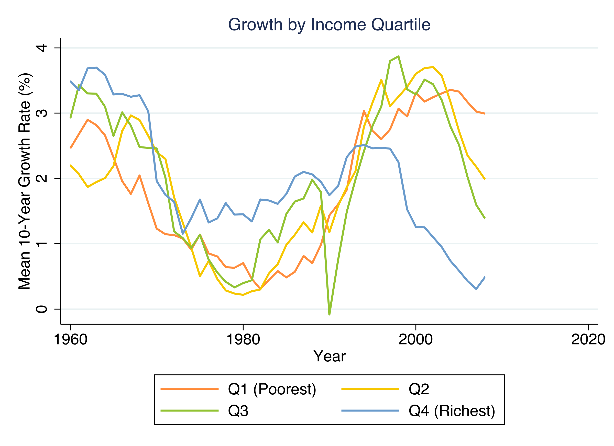
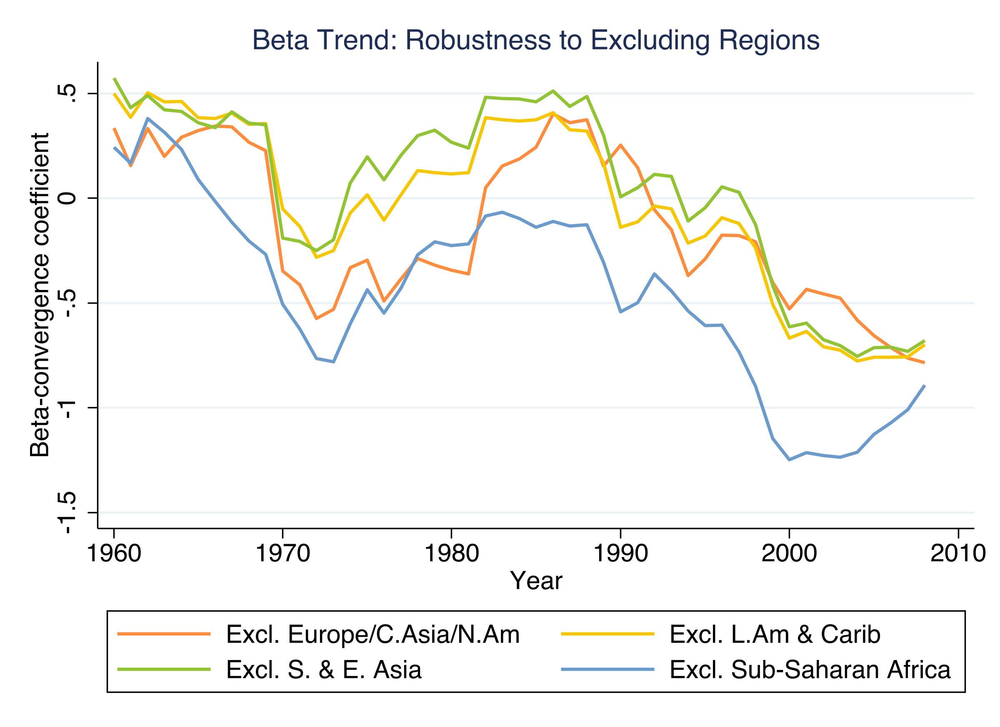
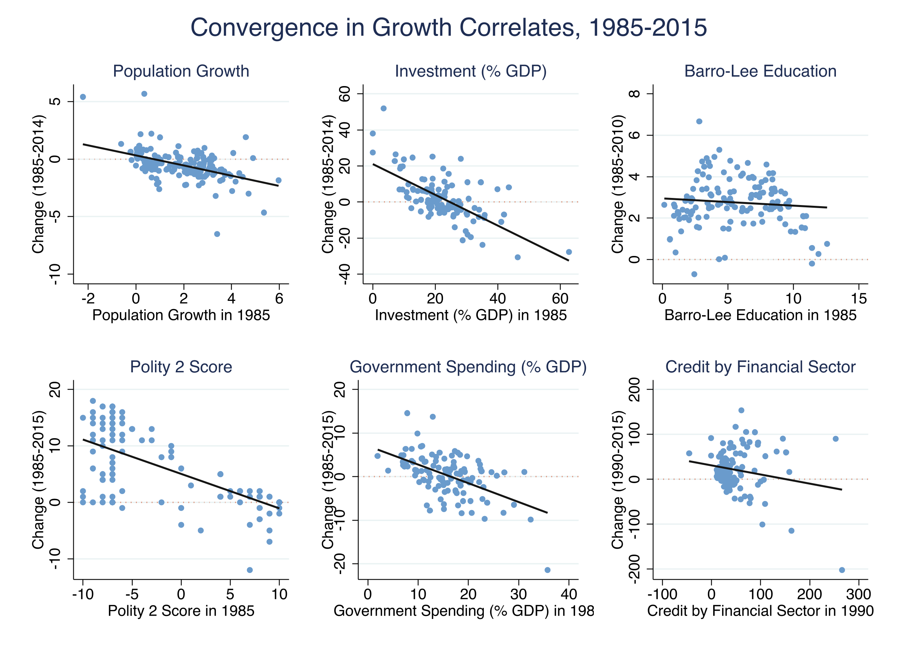

Income — log GDP per capita (mean \(8.71\), SD \(1.19\) log points)
Correlates — 50+ policy, institutional, and cultural variables, grouped into Solow fundamentals vs. short-run vs. long-run vs. culture
Unbalanced panel — 109 countries in 1960, 160 by 1990. Penn World Table 10.0 plus the Kremer et al. replication covariates. The analysis is descriptive: cross-country association, not a causal ATE.
Convergence is a trend, not a snapshot: −0.025 per year

Rolling year-by-year \(\beta\) with 95% CI. It drifts from about \(+0.5\) in the 1960s to about \(-0.8\) by 2008, crossing zero in the late 1990s.
Beta convergence leads sigma convergence by about a decade

SD of log GDP per capita across countries. Sigma rises from \(0.95\) (1960) to a peak of \(1.22\) (2000), then eases to \(1.17\).
Convergence compresses the pack from both ends

Mean 10-year growth by income quartile. The richest quartile falls from fastest (1960) to slowest (2007); the poorest accelerates.
The catch-up is global — it survives dropping any single region

Rolling \(\beta\) trend with each major region excluded one at a time. The negative trend holds in every case.
Growth correlates have themselves been converging since 1985

Convergence in six representative correlates: population growth, investment, education, democracy, government spending, credit. All slopes negative.
The omitted-variable-bias identity links the two literatures in one line
\[\beta - \beta^{\ast} = \delta \times \lambda\]
The convergence gap = \(\delta\) (income → correlate) \(\times\)\(\lambda\) (correlate → growth).
This is an exact algebraic identity, not an approximation — when the gap closes, at least one of \(\delta\) or \(\lambda\) must have shrunk.
For democracy, the gap closed because λ collapsed — not δ
Polity 2
\(\delta\)
\(\lambda\)
gap \(=\delta\lambda\)
1985
0.494
0.891
0.440
2005
0.216
0.183
0.040
\(\delta\) roughly halved, but \(\lambda\) fell \(\sim5\times\) — democracy went from a strong growth predictor to nearly none. The gap closed 91%.
Three normalized regressions reproduce the OVB worked example
Unconditional \(\beta\) (ink) and conditional \(\beta^{\ast}\) (steel) on a fixed 73-country sample. The gap collapses from \(1.49\) (1985) to \(0.15\) (2000).
The Polity 2 OVB gap closed 91% in twenty years
91%
Polity 2 \(\beta-\beta^{\ast}\) gap fell from \(0.440\) (1985) to \(0.040\) (2005)
Does this make convergence causal? No — it is still a description
Objection. If we know exactly why unconditional convergence emerged, surely we can advise poor countries on what to do.
Response. The OVB identity decomposes correlations, not causal effects. A conditional association — not an ATE, and not policy advice.
Let the data, not the 1990s regressions, tell you what predicts growth.